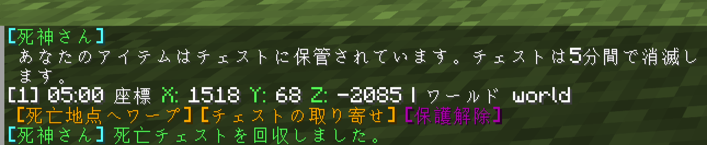
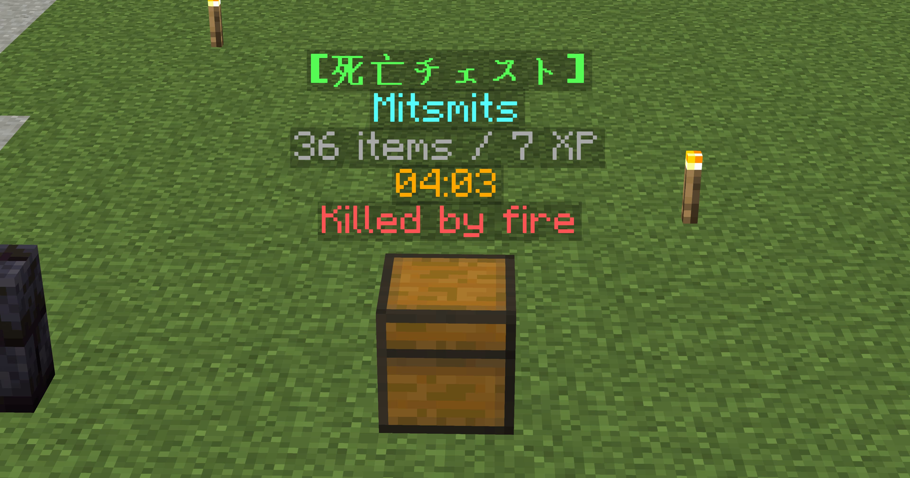

[新機能] あなたの持ち物を守ります！
おしゃサーバーでは、ゲーム内で死亡した際にアイテムをチェストに保管したり、ゲーム内通貨「しゃす」を使用して死亡場所へのテレポートなどが可能になりました！
ディメンション、ワールドにかかわらず使用できるようになりましたので、いままで以上に安心してプレイしていただけます。
ちなみにエンドで奈落に落ちた場合でも、y1地点にチェストが生成されるので即ロストの心配はありません(取り寄せがおすすめです)。
死亡時の操作
死亡すると、自動的にチェストが生成され死亡時に保持していた持ち物が格納されます。
チェストは死亡後5分間保持され、時間切れになるとチェストが消滅し中身が放出されます。

死亡した場所などの情報を確認できるほか、死亡地点へワープしたりチェストを今いる場所に取り寄せたりできます。
死亡地点へワープ
[死亡地点へワープ]をクリックすると死亡した地点へワープしチェストを回収することができます。
利用料金は 4,000しゃす です。
コマンド /actp でも同様の操作が可能です。
チェストを取り寄せ
[チェストを取り寄せ]をクリックすると今いる場所にチェストを取り寄せることができます。
利用料金は 5,000しゃす です。
コマンド /acfetch でも同様の操作が可能です。
保護解除
[保護解除]をクリックすると誰でもチェストを開けられる状態になります。
死亡地点の近くにいる友達に代理で回収してもらう時などに使用してください。
コマンド /acunlock でも同様の操作が可能です。
アイテムを回収
死亡地点に生成されたチェストは、クリックすることで回収することができます。
